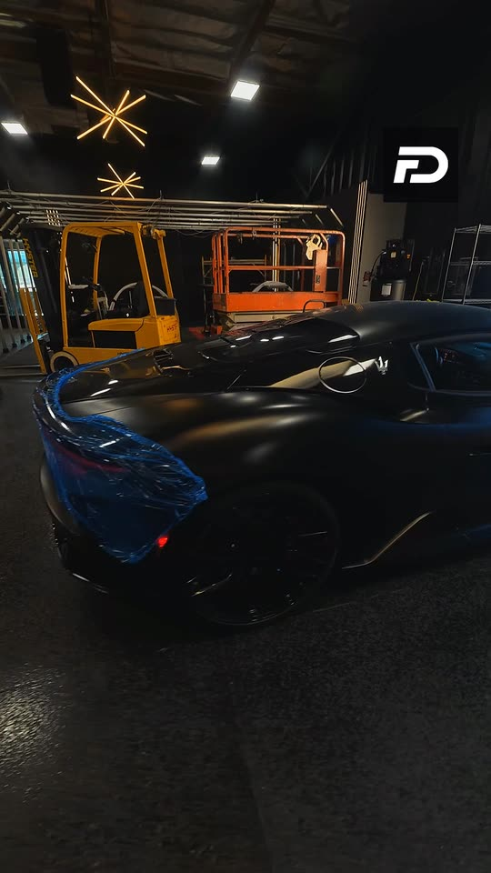

Formula Dynamics · Job 08 of 12F8 iPE and MC20 Stage 2
Three cars in the bay: an Aston Martin V12 Vantage, the F8 Spider with its iPE exhaust and the MC20's Stage 2.
Watch the full episode
Formula Dynamics · Job 08 of 12Three cars in the bay: an Aston Martin V12 Vantage, the F8 Spider with its iPE exhaust and the MC20's Stage 2.
Watch the full episode